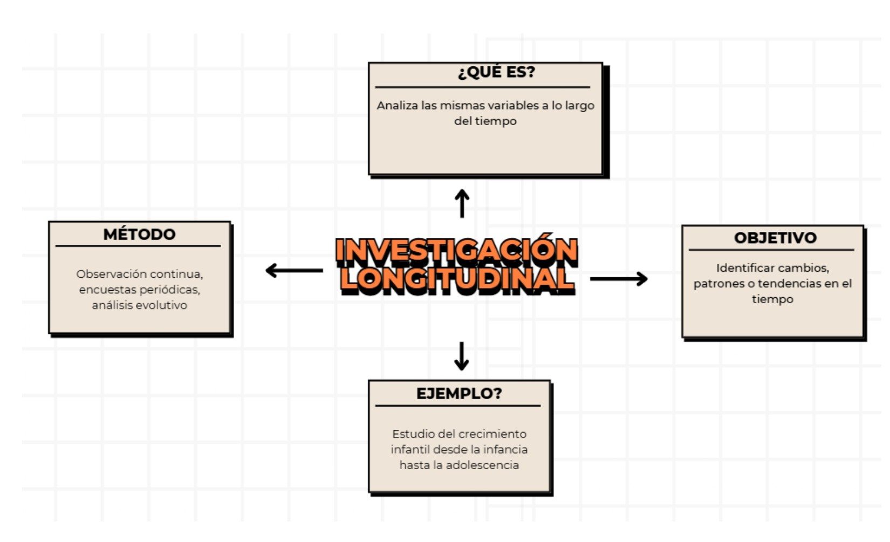

INVESTIGACIÓN LONGITUDINAL
El último tipo de investigación de esta página web, la diferencia entre esta investigación y la transversal está bastante marcada, vemos el porqué.
¿Qué es la investigación longitudinal?
La investigación longitudinal es un método en el que se estudia un fenómeno o grupo de personas durante un período
prolongado de tiempo. A diferencia de la investigación transversal, que captura datos en un solo momento, la longitudinal
realiza varias mediciones a lo largo del tiempo para analizar cambios y tendencias.
Este tipo de estudio es común en psicología, salud, educación, sociología y economía, ya que permite observar cómo
evolucionan las variables en un grupo específico.
Importancia
1. Permite analizar la evolución y los cambios en un fenómeno a lo largo del tiempo.
2. Ayuda a identificar patrones y relaciones causales entre variables.
3. Es útil para estudios de desarrollo humano, enfermedades crónicas y cambios económicos.
4. Facilita la toma de decisiones basadas en datos a largo plazo.
Ejemplo
Estudio sobre el desarrollo emocional de niños desde los 5 hasta los 18 años
En psicología, la investigación longitudinal se utiliza para analizar cómo cambian las emociones y el comportamiento de una
persona a lo largo del tiempo. Un ejemplo de esto es un estudio que sigue a un grupo de niños desde los 5 hasta los 18 años
para evaluar su desarrollo emocional.
Los investigadores realizan evaluaciones periódicas a lo largo de los años para analizar aspectos como:
• Cómo manejan sus emociones en diferentes etapas.
• Cómo influyen las experiencias familiares y escolares en su bienestar emocional.
• De qué manera evolucionan su autoestima y habilidades sociales.
A través de cuestionarios, entrevistas y observaciones, este estudio permite identificar patrones en la regulación emocional,
ayudar a prevenir problemas de salud mental y mejorar los programas educativos enfocados en el bienestar infantil.
Este tipo de investigación es clave para entender cómo las emociones se desarrollan y qué factores pueden influir en la
salud mental a largo plazo.
¿Tienes alguna duda sobre este tipo de investigación?
No te preocupes, te dejamos el siguiente mapa conceptual el cual explica a detalle y de manera resumida lo que trata este tipo de investigación:
Para que todo quede más claro, te dejamos el siguiente video explicativo:
Esperamos que con el siguiente video puedas resolver tus dudas y te quede más claro este tipo de investigación.